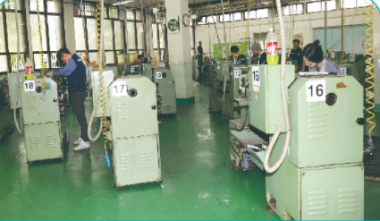

1. 학과 소개
자동화기계과는 우리 나라 산업의 기본인 정밀절삭가공,설계 및 제작, 자동화설비를 제어하는 데 필요한 기술을 익히는 학과이다.
컴퓨터로 제품을 3D모델링하고 CAD/CAM시스템으로 작성된 프로그램을 자동생산기계(머시닝센터, CNC선반)에서 제품 가공하는 기술과
범용공작기계(밀링,선반)로 제품을 가공하는 기술을 익히는 학과이다.
생산성의 개념이 소품종 대량생산에서 다품종 소량생산 체제로 전환하면서 공장 자동화는 계속적으로 발전 진행되고 있다. 따라서 자동생산 기술이 더욱 더 고급화 다양한된 기술과 인력을
필요로 하고 있다.
자동생산은 산업사회가 발전하면서 날로 발전할 것이며 자동화시스템은 유연성, 통합성, 효율성 등과 함께 따르는 고급인력을 더욱 더 요구될 것으로 본다.
3개년의 교육과정 이수와 방과 후 수업으로 컴퓨터 응용선반기능사, 컴퓨터응용밀링기능사, 전산응용기계제도기능사 등을 취득할 수 있다.
2. 전공 과목
기초제도, 기계기초공작, 재료일반, 기계공작법, 기계구조와기능, 전문제도, 3D모델링가공, 기계요소설계,
선반가공, 밀링가공, 컴퓨터활용생산
3. 실습내용
컴퓨터응용선반 : 범용선반 + CNC 선반 조작 + 프로그래밍
컴퓨터응용밀링 : 범용밀링 + CNC 밀링 조작 + 프로그래밍
기계가공조립 : 범용밀링 + 범용선반 + 기계조립
전산응용기계제도 : 기계제도 + CAD + Soild Works + 3D모델링
3D모델링가공 : 3D모델링가공 + 프로그래밍 + CNC 밀링 조작 가공
4. 취득 자격증
컴퓨터응용선반기능사, 컴퓨터응용밀링기능사,전산응용기계제도기능사, 생산자동화기능사/용접기능사
5. 출처
-
경기기계공업고등학교 홈페이지